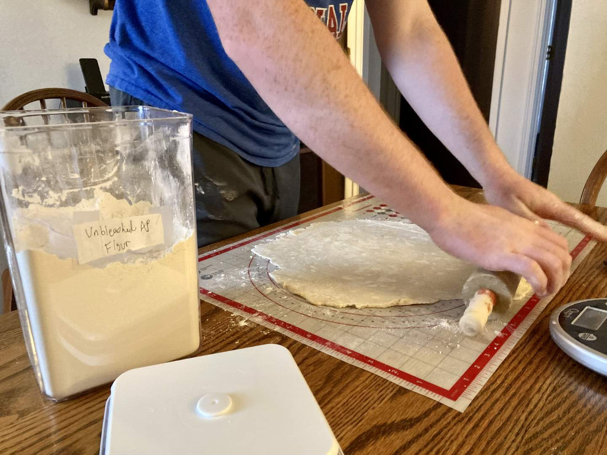
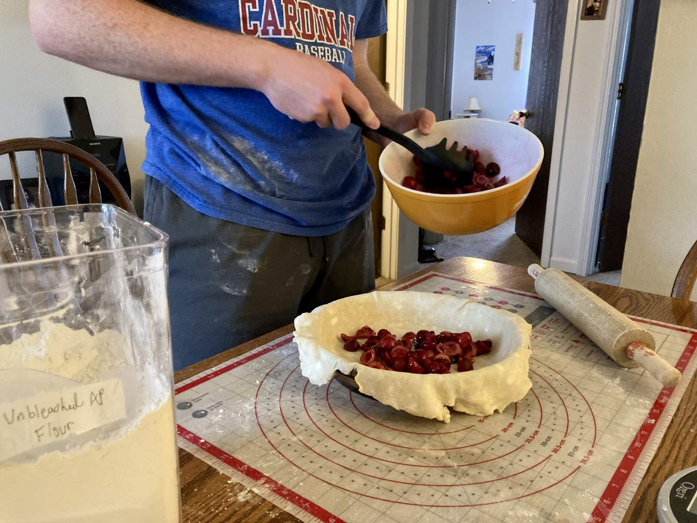
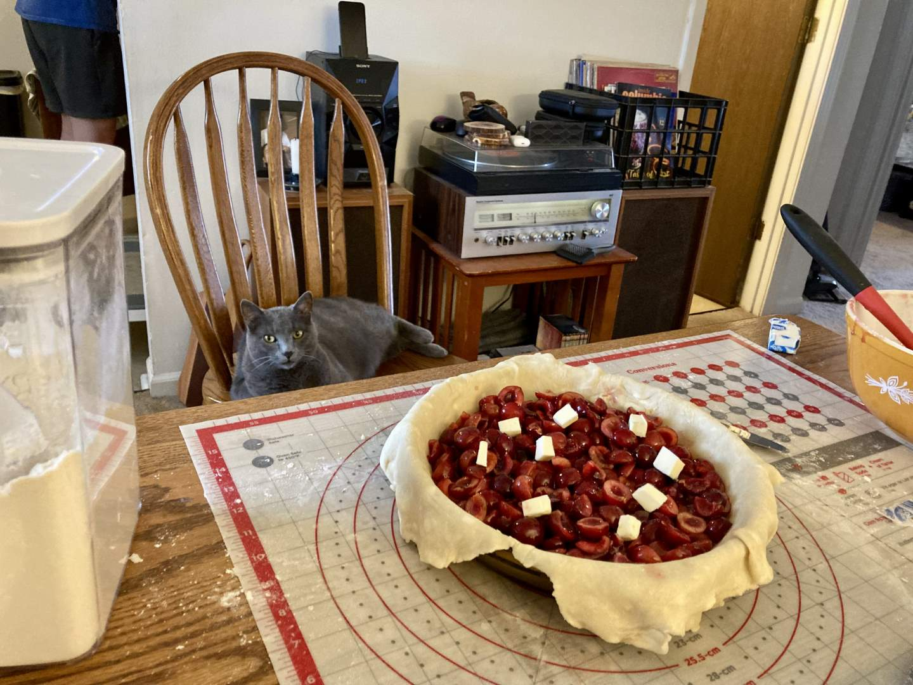
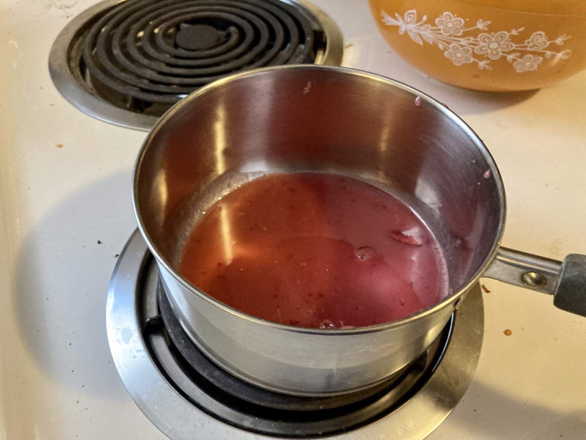
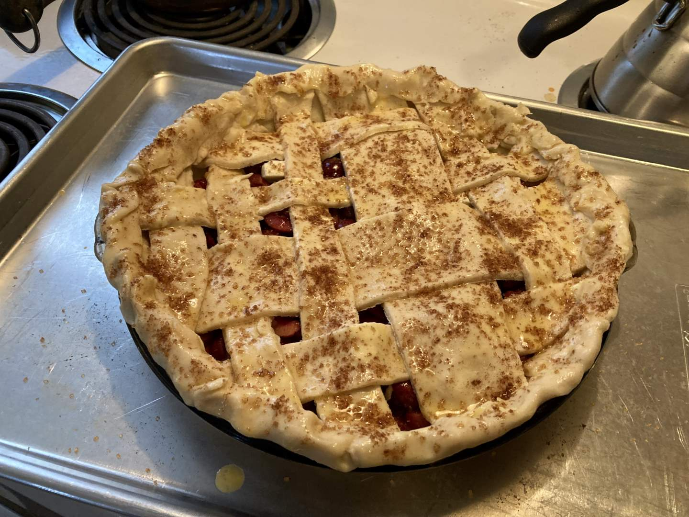
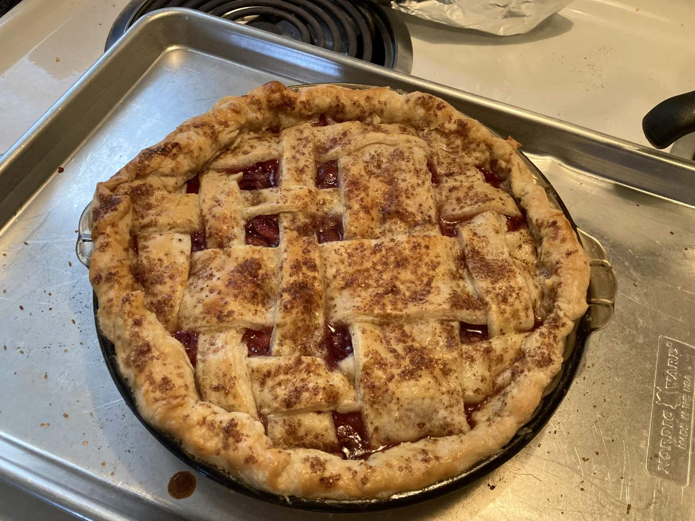

Pie 47: Cherry
2024-05-20Filling recipe from Sally's Baking Addiction.
Crust recipe from Sally's Baking Addiction.
Taste:
Difficulty:
Vibes:
Suggested pairing: sandwiches, fruit, cake
This red cherry tart pie was delightful tart and sweet. Katie Beth pitted and cut in half a big bowl of cherries, then quartered half the bowl. The combination created a pleasant textural experience.
Meanwhile, I rolled out a buttery crust for the bottom of the pie.
I dumped the cherries into the crust shell, then boiled the cherry juice with lemon juice, vanilla and almond extracts, cornstarch, and sugar.
 After pouring that syrup over the cherries, we wove an asymmetrical lattice crust and baked the pie.
 The buttery, crunchy crust succeeded in containing the filling, but it was close. These were juicy cherries and there was a lot of moisture at the bottom of the pie even after the syrup reduction. Regardless, it was a pretty pie and a delicious slice.